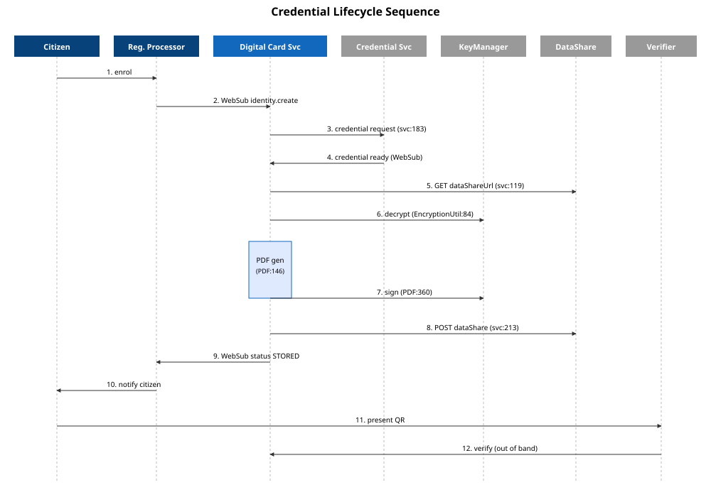

Observability Strategy
- Logs: text via SLF4J, no JSON structure, sensitive context leaks (controller:93).
- Metrics: ServiceMonitor template exists (helm/digitalcard/templates/servicemonitor.yaml) — Prometheus-ready but no custom counters defined in code.
- Tracing: none (no OpenTelemetry / Sleuth / Brave imports).
- Alerting: not defined in helm.

Three Pillars
| Pillar | Current | Target | Notes |
|---|---|---|---|
| Logging | SLF4J text, broken placeholders (DigitalCardServiceImpl:147 "{}+e") | JSON, MDC with rid+correlationId | PII filter mandatory |
| Metrics | Actuator basics | Custom: cards.generated, pdf.duration.histogram, websub.subscribe.failures | Micrometer + Prometheus |
| Tracing | None | OpenTelemetry agent → Jaeger/Tempo | Trace WebSub → decrypt → PDF → sign → publish |
| Alerting | None | SLO-based: error-rate > 1%, p99 latency > 500ms | Wire to PagerDuty |
Instrumentation Points (cited)
- Controller entry: DigitalCardController.java:50, 65, 80, 102 — start trace span, MDC put.
- Decrypt: EncryptionUtil.java:84 — measure latency.
- PDF generate: PDFCardServiceImpl.java:146-213 — counter + histogram.
- Status update: DigitalCardServiceImpl.java:210-240 — metric for each transition.
- Re-subscription: DigitalCardInitializer.java:88-101 — counter for failures.